SYDE 671 · Introduction to Computer Vision · Assignment 1
Automatic Colour Reconstruction of Prokudin-Gorskii Glass-Plate Photographs
Single-scale L2 and NCC alignment with coarse-to-fine pyramid acceleration
Abstract—This report reconstructs colour photographs from 18 vertically stacked Prokudin-Gorskii glass plates supplied through the course. Each plate is divided into blue, green, and red exposures; green and red are translated to align with blue. Exhaustive single-scale alignment is evaluated with Euclidean distance and normalized cross-correlation, while a hand-built Gaussian pyramid extends NCC alignment to full-resolution plates. Twelve low-resolution plates completed in an average of 0.73 seconds and six full-resolution plates in an average of 59.42 seconds. Pyramid alignment recovered displacements as large as ((76,161)) pixels, beyond the single-scale ([-15,15]) window.
Index Terms—image alignment, Gaussian pyramid, normalized cross-correlation, Euclidean distance, colour reconstruction, Prokudin-Gorskii.
I. Problem and Dataset
Each source image contains three monochrome exposures recorded through blue, green, and red filters and stacked vertically in BGR order. If the input height is (H), the program uses ⌊(H/3)⌋ rows per channel, discards any unmatched remainder, and constructs an RGB image after alignment. Blue remains fixed; green and red are independently translated onto it.
The course-provided Learn directory contained 18 catalogue-numbered JPEG plates: 12 low-resolution plates with channel heights of 341 pixels and six full-resolution plates with channel heights between 3212 and 3238 pixels. The assignment template mentions named examples and a 20-image rubric, but those files were not included in the supplied dataset; every provided plate was processed.
II. Alignment Method
A. Translation Search
A candidate displacement ((d_x,d_y)) is applied with array rolling. Scoring excludes a border large enough to prevent wrapped pixels from influencing the comparison. The single-scale implementation searches every integer displacement in ([-15,15]^2), or 961 candidates per moving channel.
B. Euclidean Distance
The displacement with the smallest (L_2) score is selected. This metric is direct but sensitive to differences in brightness and contrast between filter exposures.
C. Normalized Cross-Correlation
The displacement with the largest NCC score is selected. Normalization reduces sensitivity to global magnitude differences, so NCC was chosen for the coarse-to-fine pipeline. Both metrics are still reported at a single scale for comparison.
D. Output Construction
The aligned channels are stacked as ([R,G,B]), clipped to ([0,1]), converted to 8-bit colour, and saved as JPEG. The display crop equals a 20-pixel base margin plus the largest recovered displacement, removing pixels wrapped by the translation.
III. Single-Scale Alignment
On low-resolution plates, exhaustive L2 and NCC usually agree exactly or differ by only one pixel. This indicates a well-defined translational optimum despite channel-intensity differences. On full-resolution plates the best single-scale offsets frequently reach the search boundary, demonstrating why a fixed ±15-pixel window cannot recover the true motion.
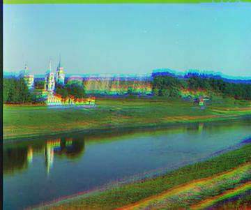
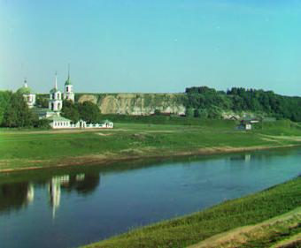

Across the 12 small plates, L2 and NCC produced identical four-component offset vectors for six images. The remaining six differed by only one to three components, except for the red vertical displacement of 01725u in the deliberately inadequate single-scale search. Visual output and recovered offsets support using NCC as the consistent pyramid metric.
IV. Coarse-to-Fine Gaussian Pyramid
Large images are repeatedly blurred with the separable binomial kernel ([1,4,6,4,1]/16) and downsampled by two until the smallest dimension is below twice the 150-pixel threshold. Alignment begins at the coarsest level with a ±15-pixel search. At each finer level, the displacement is doubled and refined within ±2 pixels. The blur and downsampling routines are implemented directly rather than through a high-level pyramid library.
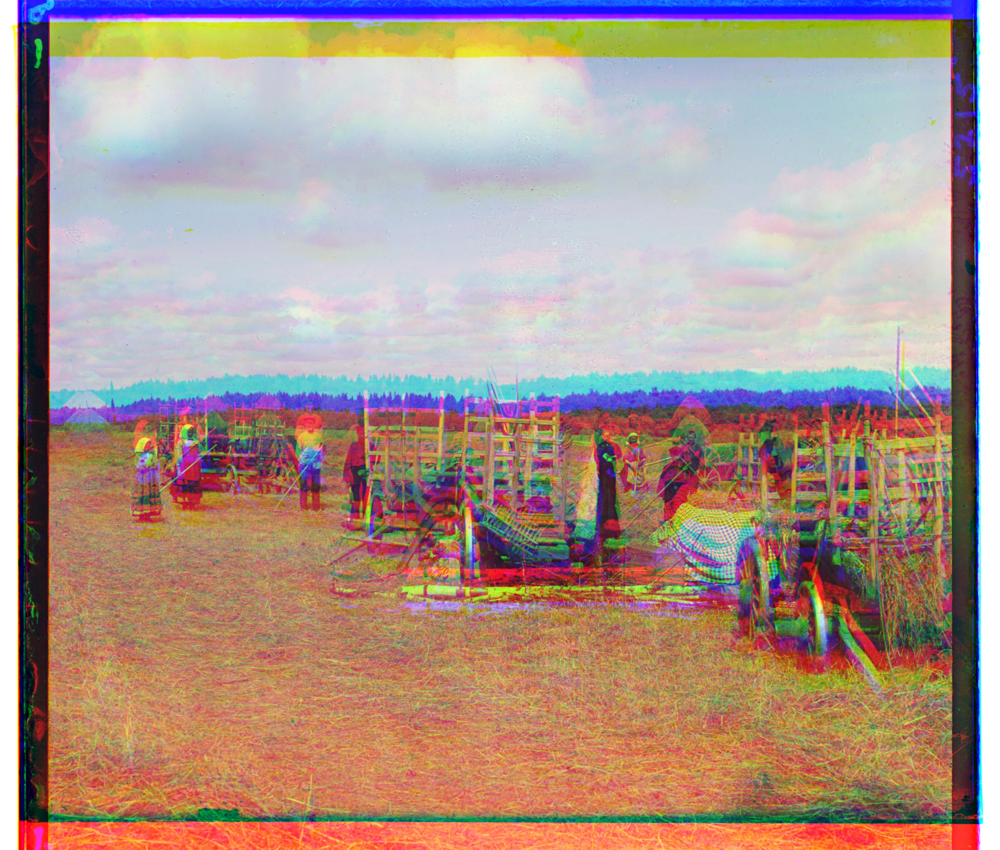
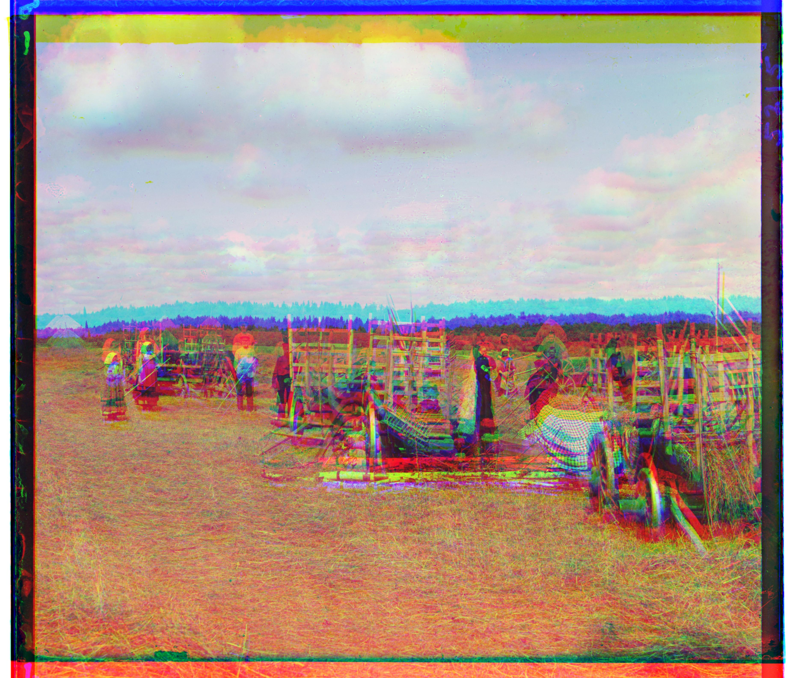

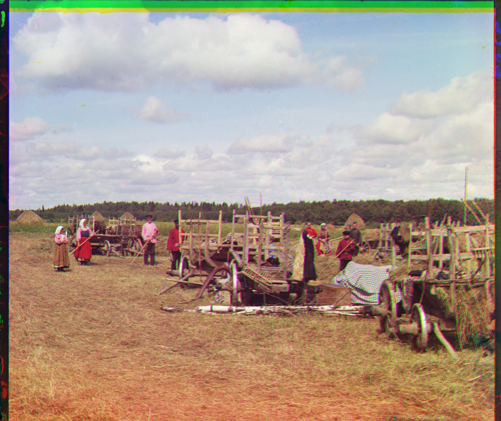
A. Animated Alignment Walkthrough
Figure 3 follows plate 01007a through the complete reconstruction pipeline. It first separates the vertically stacked scan into blue, green, and red exposures, then shows the unaligned colour composite. The L2 and NCC heatmaps visualize every displacement tested inside the single-scale ±15-pixel window: each pixel in a heatmap represents one candidate shift, and the marked optimum is the shift selected by that metric.
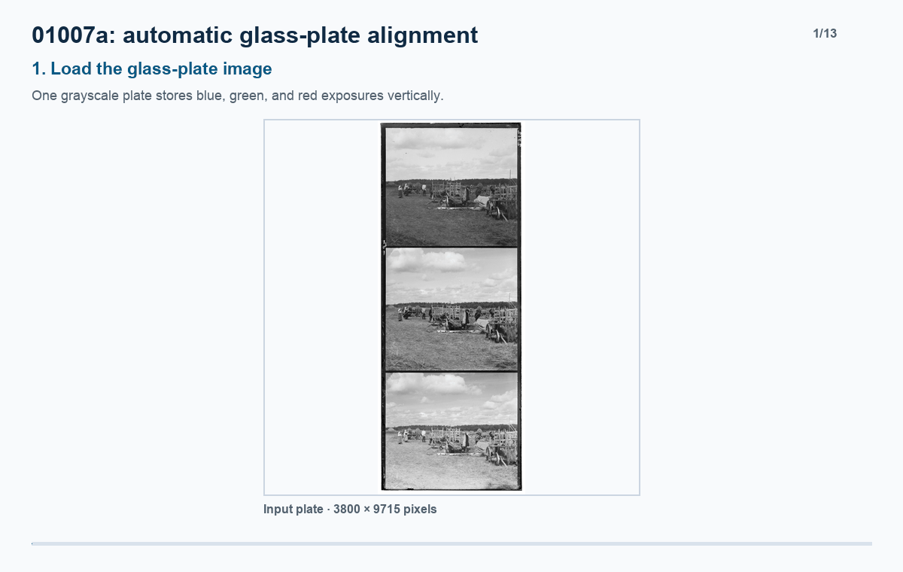
The animation displays the meaningful optimization stages rather than all 961 candidate comparisons individually. This preserves the relationship between the score surfaces, the selected displacements, and the coarse-to-fine trajectory without slowing the walkthrough to the full computation time.
V. Complete Numerical Results
Table I reports displacements as ((d_x,d_y)), where positive values shift right and down. The timing includes loading, all three alignment variants, and writing four JPEG outputs. The median runtime over all plates is 0.61 seconds because two-thirds of the dataset is low resolution.
| Plate | Channel size | L2 G | L2 R | NCC G | NCC R | Pyramid G | Pyramid R | Time (s) |
|---|---|---|---|---|---|---|---|---|
| 00056v | 398 × 341 | (1, 6) | (1, 13) | (1, 6) | (1, 13) | (1, 6) | (1, 13) | 2.15 |
| 00125v | 400 × 341 | (2, 5) | (1, 10) | (1, 5) | (1, 10) | (1, 5) | (1, 10) | 0.62 |
| 00163v | 387 × 341 | (1, -3) | (1, -4) | (1, -3) | (1, -4) | (1, -3) | (1, -4) | 0.60 |
| 00458u | 3741 × 3238 | (-6, 15) | (-1, 14) | (-6, 15) | (-2, 11) | (-2, 42) | (29, 88) | 61.36 |
| 00804v | 396 × 341 | (-2, 6) | (-4, 13) | (-2, 6) | (-4, 13) | (-3, 6) | (-4, 13) | 0.60 |
| 01007a | 3800 × 3238 | (-4, 15) | (-9, 15) | (-4, 15) | (-9, 15) | (6, 61) | (12, 129) | 59.53 |
| 01047u | 3741 × 3218 | (2, 15) | (7, 15) | (2, 15) | (7, 15) | (17, 24) | (33, 72) | 57.94 |
| 01164v | 396 × 341 | (1, 6) | (3, 11) | (1, 6) | (3, 11) | (1, 6) | (3, 11) | 0.61 |
| 01269v | 395 × 341 | (2, 6) | (3, 14) | (2, 6) | (2, 13) | (2, 6) | (3, 13) | 0.59 |
| 01522v | 391 × 341 | (2, 6) | (2, 13) | (2, 6) | (2, 13) | (2, 6) | (2, 13) | 0.59 |
| 01597v | 395 × 341 | (1, 7) | (0, 15) | (1, 7) | (0, 15) | (1, 7) | (1, 16) | 0.60 |
| 01598v | 392 × 341 | (0, 8) | (-1, 15) | (0, 8) | (-1, 15) | (0, 8) | (-1, 16) | 0.59 |
| 01657u | 3761 × 3212 | (-8, 15) | (-15, 15) | (-8, 15) | (-15, 15) | (-6, 55) | (1, 112) | 57.71 |
| 01725u | 3731 × 3231 | (7, 15) | (13, 15) | (7, 15) | (13, -10) | (38, 77) | (76, 161) | 57.75 |
| 01728v | 397 × 341 | (1, 8) | (0, 15) | (1, 8) | (1, 15) | (1, 8) | (1, 18) | 0.61 |
| 01861a | 3741 × 3228 | (15, 15) | (15, 15) | (15, 15) | (15, 15) | (38, 71) | (62, 148) | 62.22 |
| 10131v | 400 × 341 | (2, 6) | (3, 12) | (2, 6) | (3, 11) | (2, 6) | (3, 12) | 0.61 |
| 31421v | 398 × 341 | (0, 8) | (0, 13) | (0, 8) | (0, 13) | (0, 8) | (0, 13) | 0.61 |
A. Pyramid NCC Gallery
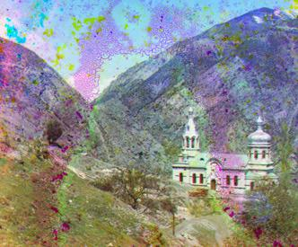
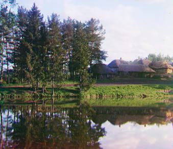
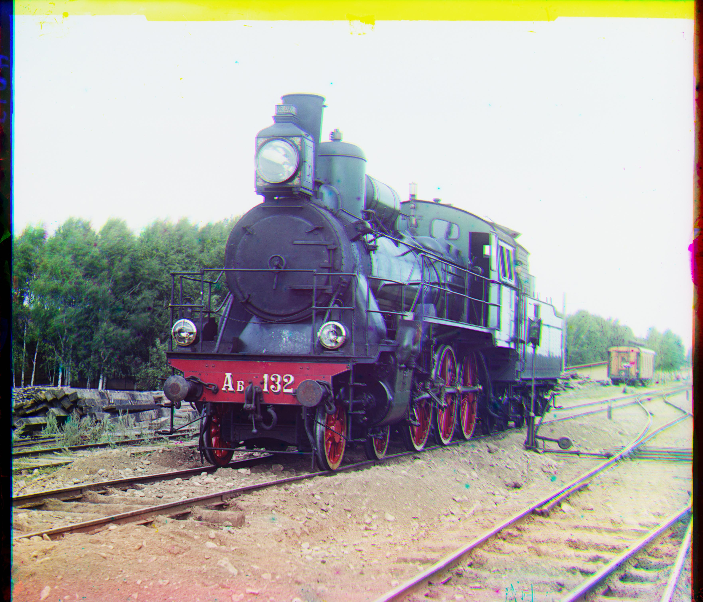
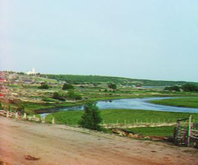
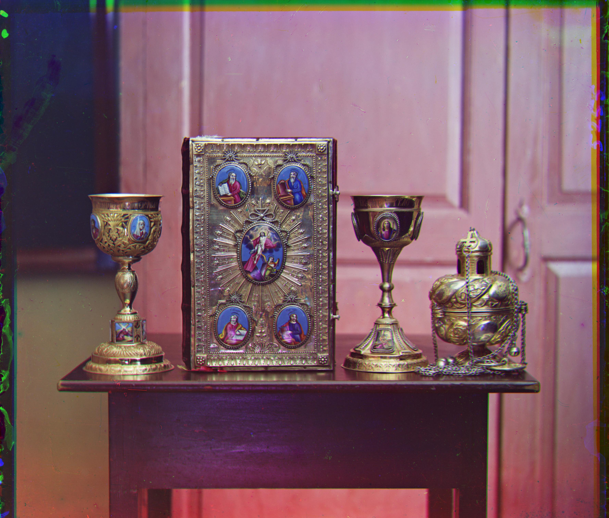
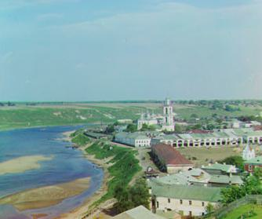
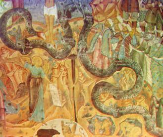
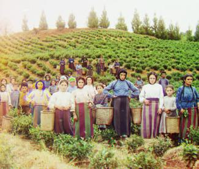
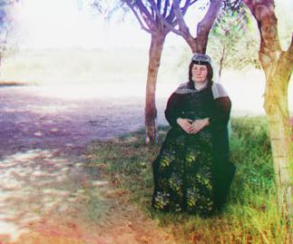
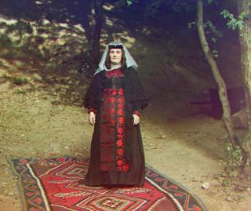
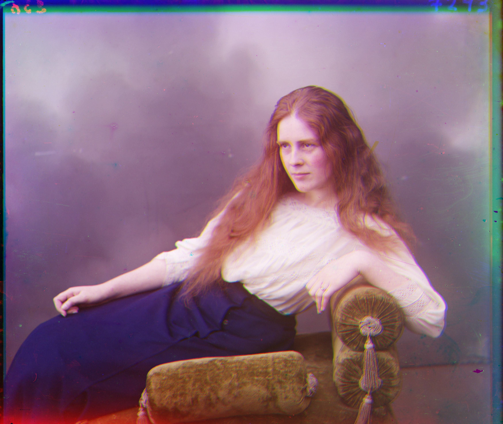
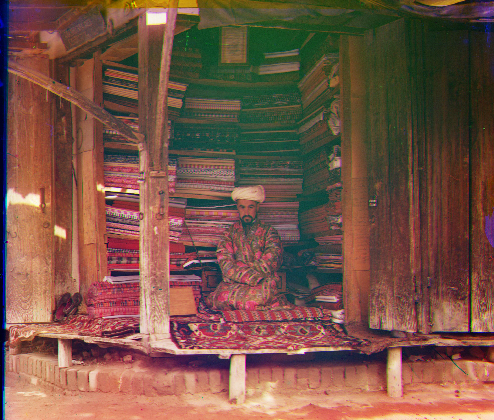
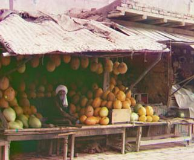
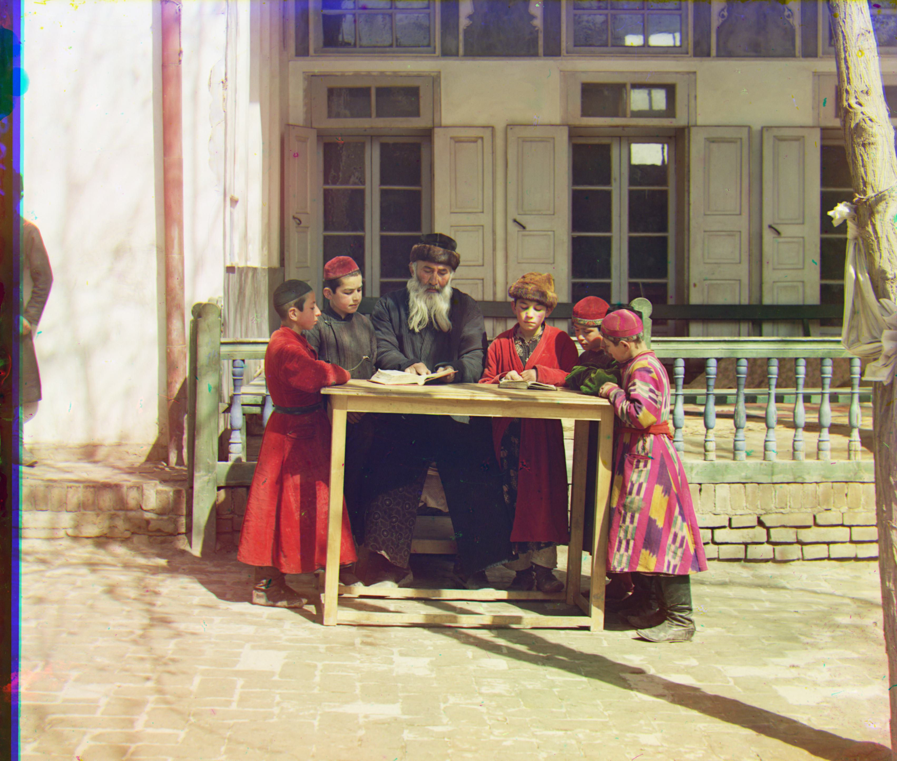
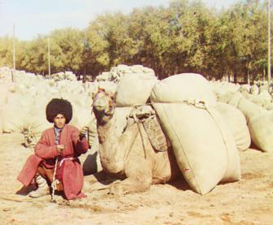
VI. Analysis and Limitations
A. Alignment Quality
The pyramid results remove the large, obvious channel separation visible in the unaligned full-resolution composites. Fine scene structure—including architectural edges, faces, tree lines, and object contours—generally agrees across channels. No final image shows the gross double-edge failure expected from a wholly incorrect displacement.
Plate 00056v retains strong magenta, green, and cyan speckling in the sky and mountain regions. Because the recovered L2, NCC, and pyramid offsets agree exactly, this pattern is more consistent with emulsion damage or channel-specific plate content than with a different translational optimum. Plates 00458u, 01007a, 01047u, 01657u, and 01861a retain narrow coloured source borders; these are boundary artifacts rather than misalignment of the interior scene.
B. Single-Scale versus Pyramid Search
The small plates require displacements no larger than 18 pixels and therefore mostly fit the single-scale window. The large plates require vertical red shifts from 72 to 161 pixels. Their single-scale estimates often stop at (d_y=15), while the pyramid propagates coarse estimates to the original resolution. Plate 01725u is the strongest example: single-scale NCC reports red ((13,-10)), but pyramid NCC finds ((76,161)), producing coherent interior detail.
C. Performance
Low-resolution processing averaged 0.73 seconds per plate, with a 0.61-second median. Full-resolution processing averaged 59.42 seconds and ranged from 57.71 to 62.22 seconds. The batch therefore meets the intended interactive scale for small images and remains close to the assignment's one-minute target for large plates. Most large-image time is spent evaluating full-resolution single-scale L2 and NCC for comparison; the pyramid itself avoids a prohibitively large exhaustive search over the true displacement range.
D. Bells and Whistles
No optional photometric enhancement was applied. The implementation includes anti-aliased Gaussian downsampling and displacement-aware removal of wrapped pixels, but it does not claim automatic border detection, contrast correction, white balance, feature-based alignment, rotation, or scale estimation. This keeps the comparison focused on the required translation model and matching metrics.
VII. Reproducibility and Supporting Files
The implementation processes every JPEG in the data directory, saves unaligned, L2, NCC, and pyramid-NCC reconstructions, and records all scores, offsets, runtimes, and failures in a CSV file.

data/, then execute python3 main.py. Generated files are written to outputs/.VIII. Conclusion
Exhaustive translation search is sufficient for low-resolution plates but cannot span the motion present in full-resolution scans. A hand-built coarse-to-fine Gaussian pyramid makes large displacements tractable while retaining the required NCC metric and fixed parameters. Across all 18 supplied plates, the method produces visually coherent colour reconstructions, exposes the limitations of a bounded single-scale search, and records reproducible offsets for every result.
References
- SYDE 671, “Assignment 1,” course assignment document.
- Library of Congress, “Prokudin-Gorskii Collection,” digitized glass-plate photographs.
- R. Szeliski, Computer Vision: Algorithms and Applications, discussion of image pyramids and colour processing.